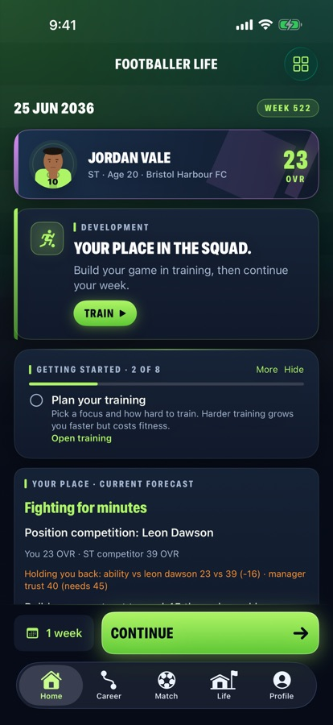
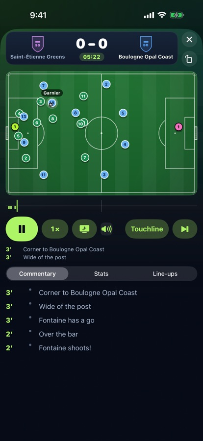
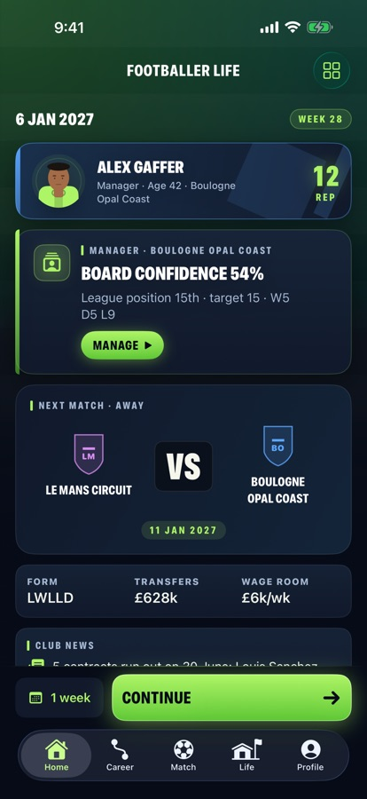
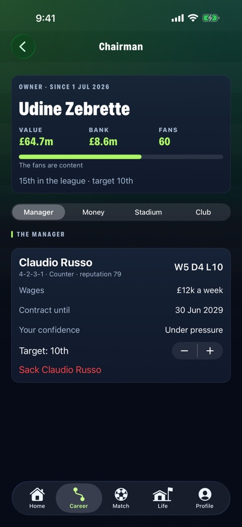
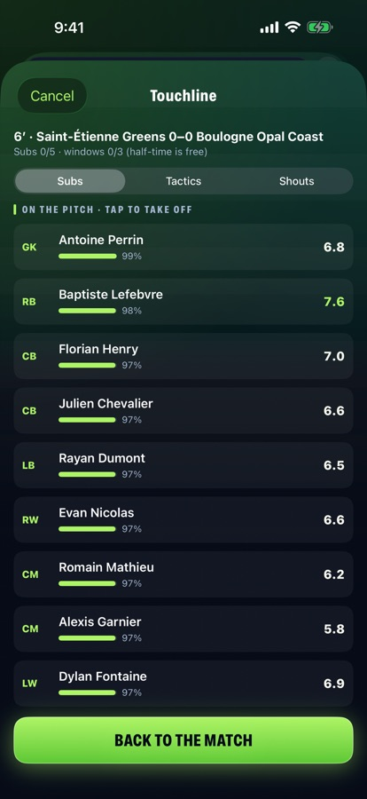
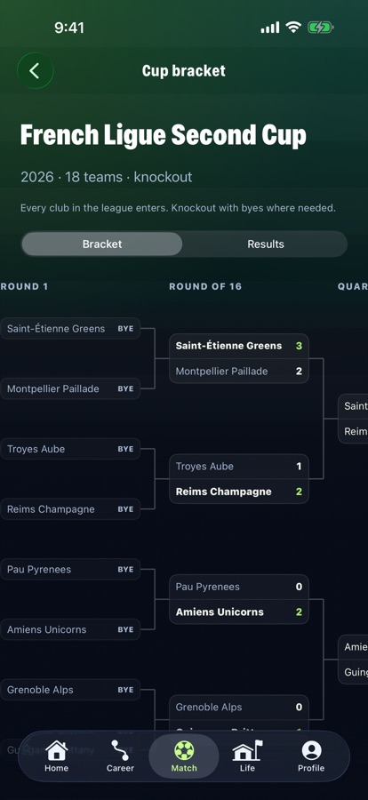
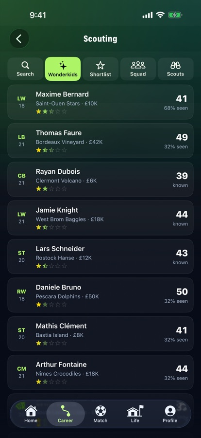
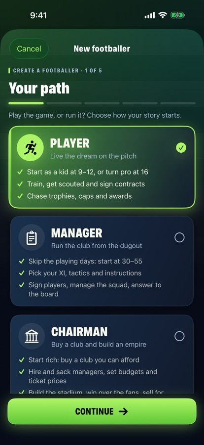

Player
Live the dream
School pitch, academy trial, first contract. Take the big moments yourself: shots, penalties, headers and last-gasp chances.
Play, manage or own the club. Rise from the school pitch to the world stage, take the big moments yourself and build a life off the pitch.

Start as a ten-year-old with a dream, take a job in the dugout, or buy the club outright. Men's or women's football, across three divisions and 32 nations.

School pitch, academy trial, first contract. Take the big moments yourself: shots, penalties, headers and last-gasp chances.

Pick the XI, set tactics, change it live from the touchline, sign wonderkids and keep the board happy.

Buy a club, build the stadium, hire and fire the manager, and sell for a profit if the fans let you.




Every week brings a decision. Every season tells a story.
Three careers, one for each mode, with no ads and no tracking. Footballer Life Pro is a one-time unlock for players who want more.
Email playfootballerlife@gmail.com. Please include your iPhone model and the app version (Profile › Settings › About).
On your iPhone, with automatic backups in your own iCloud Drive when it is on. You can also use Back up (career list, or Settings) to keep a copy in Files, and Import a backup on the career list to restore it.
Profile › Settings › Restore purchases, signed in with the same Apple Account.
Check Home for a decision waiting (an offer, a match moment or a family choice). If it still fails, email us; your save is never overwritten by a failed week.
No. All clubs, players and brands are fictional, with realistic names for every country. You can rename anything in the game editor.